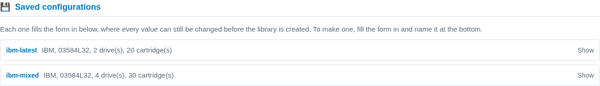

Profiles and presets
Two words for two different things, and the difference matters because one of them you can change and the other you cannot.
A profile is a vendor’s catalogue: which libraries IBM makes, which drives each of those models takes, which cartridges each drive writes. It describes hardware that exists, it ships with the console, and nothing can edit it.
A preset is a configuration you built from a profile and gave a name to, so you can build that library again without retyping it.
Both are templates. Neither is ever a library until you create one from it.
The nine profiles
$ mhvtl profile list
ADIC DELL HP IBM OVERLAND QUANTUM SONY SPECTRA STK
9 profile(s). For one of them: mhvtl profile show ADIC
mhvtl profile show IBM prints the whole catalogue: every library model
with its drive and slot limits, and every drive model with the densities it
writes and the ones it can only read. It is long, because the real catalogue
is long - thirteen library models and twenty drives for IBM alone.
The useful column is WRITES:
DRIVE MODEL LTO WRITES READS ONLY DEFAULT
----------- --- ------------- ---------- -------
ULT3580-TD7 7 LTO7, LTO6 LTO5 no
ULT3580-TD8 8 LTO8, LTO7 - yes
ULT3580-TD9 9 LTO9, LTO8 - no
ULT3580-TDA 10 LTO10, LTO10P - no
A profile has no write verbs at all - no profile set, no profile
delete. There is nothing to edit: if a drive is not in the list, the vendor
does not make it, and making one up would produce a library that identifies
itself as hardware that does not exist.
Note
A vendor’s default is not its newest. IBM’s default drive is the
ULT3580-TD8, which writes LTO8, while its catalogue reaches the
ULT3580-TDA and LTO10. Quantum’s default is an SDLT600, which is not LTO at
all. So mhvtl library create --profile QUANTUM on its own builds an
SDLT library - correct, and probably not what you wanted. Naming the drive
and the density is what pins a library to the newest generation.
What a preset is for
This is a complete, working command:
$ sudo mhvtl library create --profile IBM --model 03584L32 \
--drive-model ULT3580-TDA --media-type LTO10 \
--drives 2 --tapes 20 --empty-slots 4
Typing it twice is how the second library ends up subtly different from the first. Name it once and it becomes:
$ sudo mhvtl library create --preset ibm-latest --id 90
Eleven are installed with the console
/etc/mhvtl-gui/presets.toml.example ships one library for every vendor, at
the newest cartridge that vendor’s drives can write. Copy a table out of it
into presets.toml beside it, or just read it to see what the keys look
like.
$ mhvtl preset list
NAME BUILDS
--------------- -------------------------------------------------
adic-latest ADIC, Scalar i2000, 2 drive(s), 20 cartridge(s)
dell-latest DELL, PV-136T, 2 drive(s), 20 cartridge(s)
hp-latest HP, MSL G3 Series, 2 drive(s), 20 cartridge(s)
ibm-latest IBM, 03584L32, 2 drive(s), 20 cartridge(s)
ibm-mixed IBM, 03584L32, 4 drive(s), 30 cartridge(s)
overland-latest OVERLAND, NEO Series, 2 drive(s), 20 cartridge(s)
quantum-latest QUANTUM, Scalar i500, 2 drive(s), 20 cartridge(s)
sony-latest SONY, LIB-302, 2 drive(s), 20 cartridge(s)
spectra-latest SPECTRA, PYTHON, 2 drive(s), 20 cartridge(s)
stk-latest STK, SL500, 2 drive(s), 20 cartridge(s)
stk-lto STK, SL500, 2 drive(s), 20 cartridge(s)
11 preset(s). For one of them: mhvtl preset show adic-latest
Three of those are worth a glance, because they are the ones that are not the obvious row. hp-latest is LTO8, because HP’s own catalogue stops at the Ultrium 8-SCSI. sony-latest is AIT4, not LTO at all. And StorageTek has two, because an SL500 takes both its own T10000C and an IBM LTO drive, so “the latest cartridge” has two answers and the file gives both.
In the console
Libraries → Create Library, then a vendor. If any presets are defined for it, they are listed above the form under Saved configurations.


Each card is one line folded - the name, and the same sentence mhvtl preset
list prints beside it. Open one and it shows the breakdown and the two
commands: the one that uses it, and the one that would rebuild it.
Clicking a name fills the form in below, and every value can still be changed before you press Create. The one in use is marked on the card, and there is a control below the list to leave it again. Choosing a preset is a plain link, so nothing is written by looking.
Reading one
$ mhvtl preset show ibm-latest
preset ibm-latest - builds from the IBM catalogue
valid yes
usable yes
fixed here IBM, model 03584L32, drive model ULT3580-TDA, media type LTO10, 2 drives, 20 tapes, 4 empty slots
left to IBM drive revision D.02
Use it: mhvtl library create --preset ibm-latest
Rebuild it: mhvtl preset set ibm-latest --profile IBM --model 03584L32 --drive-model ULT3580-TDA --media-type LTO10 --drives 2 --tapes 20 --empty-slots 4
Two lines carry the point. fixed here is what the preset decides. left to IBM is what it does not, and what the profile will therefore choose - here the drive’s firmware revision.
usable is a separate question from valid. A preset that names no vendor is perfectly legal and still cannot create anything, because there is no catalogue to fill the gaps from.
Building one up
A preset does not have to be written in one go. preset set adds to or
changes one key at a time, and the keys are spelled exactly as the command
line’s options:
$ sudo mhvtl preset set bigger --drives 8 --tapes 200
preset 'bigger' saved
not usable yet: it names no profile, so it cannot create a library
$ sudo mhvtl preset set bigger --profile HP
preset 'bigger' saved
It says so rather than refusing. Half-built is a legal state, and preset
list keeps saying which ones are in it, so a name is never a trap:
bigger not usable yet - it names no profile
The other verbs
Command |
What it does |
|---|---|
|
Every one defined, and what each builds |
|
What one fixes, and what it leaves open |
|
Add or change keys |
|
Remove one key, keeping the preset |
|
Give one another name |
|
Remove the whole preset |
$ sudo mhvtl preset rename bigger hp-big
preset 'bigger' is now 'hp-big'
$ sudo mhvtl preset delete hp-big
preset 'hp-big' deleted
Keeping one from a create that worked
The other way round, and usually the better one: build the library, see that it works, then name the configuration.
$ sudo mhvtl library create --profile IBM --model 03584L32 \
--drive-model ULT3580-TDA --media-type LTO10 --drives 2 --tapes 20 \
--id 90 --save-preset ibm-latest
The preset is written from the specification that was just proved, so it cannot disagree with the library you have.
An argument still beats the file
A preset sets the defaults; the command line overrides them.
$ sudo mhvtl library create --preset ibm-latest --tapes 5 --id 91
That builds the preset’s library with five cartridges instead of twenty, and
changes nothing in presets.toml.
What a preset will not let you do
It cannot hold a combination the vendor does not make. The check happens when you save it, not when you finally try to use it:
$ sudo mhvtl preset set wrong --profile IBM --model 3573-TL \
--drive-model 03592J1A
mhvtl: preset 'wrong' would not be valid: Drive model '03592J1A' is not compatible with library model '3573-TL'
Library '3573-TL' supports drives: ULT3580-TD1, ULT3580-TD2, ULT3580-TD3, ULT3580-TD4, ULT3580-TD5, ULT3580-TD6, ULT3580-TD7, ULT3580-TD8, ULT3580-TD9, ULT3580-TDA, ULT3580-HH7, ULT3580-HH8, ULT3580-HH9, ULT3580-HHA
And it cannot take a profile’s name, because that would make the two words mean the same thing:
$ sudo mhvtl preset set IBM --drives 2
mhvtl: 'IBM' is a vendor profile, not a configuration
a preset is built from a profile and cannot share its name
try a name of your own: ibm-small
Where they live
/etc/mhvtl-gui/presets.toml, written by the commands above and readable
by hand. The file is yours; the console only ever adds to it what you asked
for.
/etc/mhvtl-gui/presets.toml.example beside it is the shipped set, and an
upgrade replaces it - so a preset written into the example file would be
lost. Copy what you want into presets.toml instead.
Editing presets.toml by hand is supported and the keys are the command
line’s, so a table reads as the command it replaces:
[ibm-latest]
profile = "IBM"
model = "03584L32"
drive_model = "ULT3580-TDA"
media_type = "LTO10"
drives = 2
tapes = 20
empty_slots = 4
Writing it needs the mhvtl group, like every other change the console
makes to the host - so the read verbs work as any user and the write verbs
want sudo.
See also
Creating a library for the form and the one-shot command, Creating a library by being asked for the guided version, and Adding and removing drives for a library that holds two generations of drive at once.